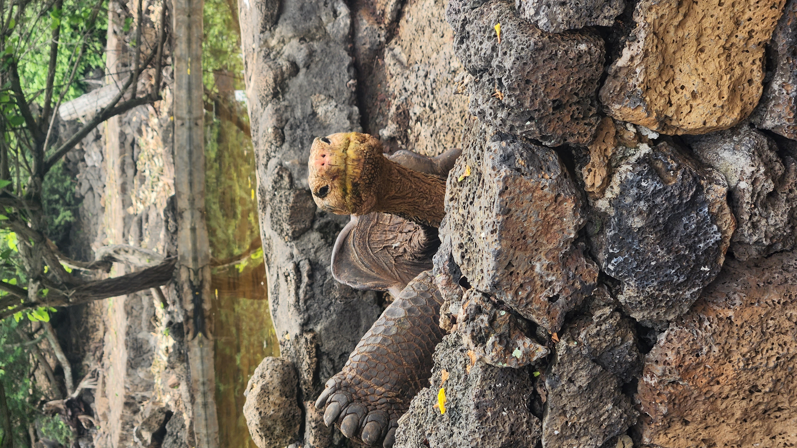

Philanthropic Galapagos Tortoise Organization
About Us
The Philanthropic Galapagos Tortoise Organization is dedicated to the conservation of the unique ecosystems of the Galapagos Islands. Our mission is to protect the iconic Galapagos animals and its habitat through community engagement, research, and sustainable practices.
By working closely with local communities and global partners, we seek that future generations can experience the natural beauty and biodiversity of the islands.